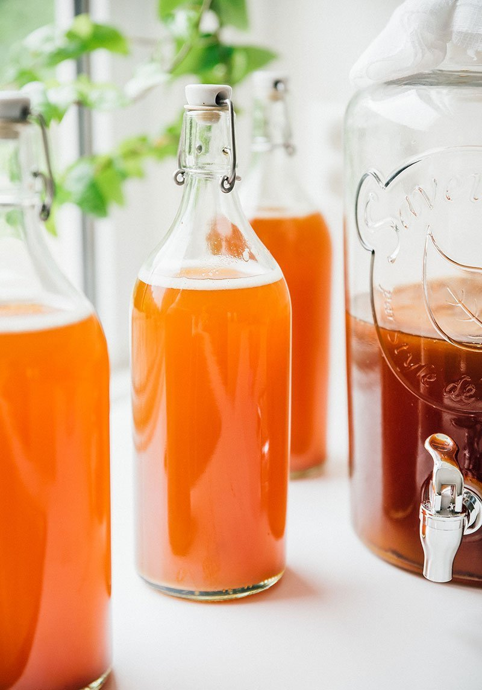

Kombucha

Description
Looking for a healthier alternative to alcohol? Try out our fermented friend - Kombucha!
Never fermented a beverage before? That's okay! Just follow our methods!
Ingredients
- 14 (3L) cups water
- 1 cup white sugar
- 8 bags black or green tea
- 2 cups unflavored kombucha
- 1 SCOBY
Steps
- Bring water to a boil. Dissolve sugar into it (off the heat) and allow tea bags to soak for 20 minutes.
- Cool to room temperature.
- With clean hands add the SCOBY to a clean plate.
- Cover for a few days securing it with a cloth and rubber band.
- Allow it to ferment in the dark at room temperature.
- Bottle the kombuhca and add sweetener of your choosing.
- Allow it to ferment in the dark fro 3-10 days.
- You're finally finished! Serve and enjoy!
Source: BrewBuch